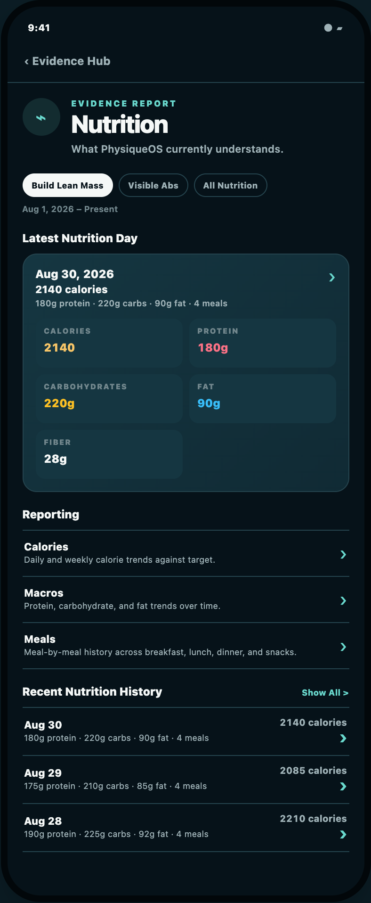
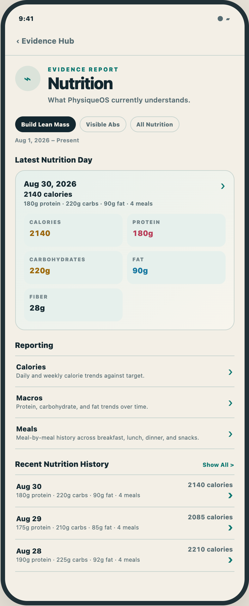
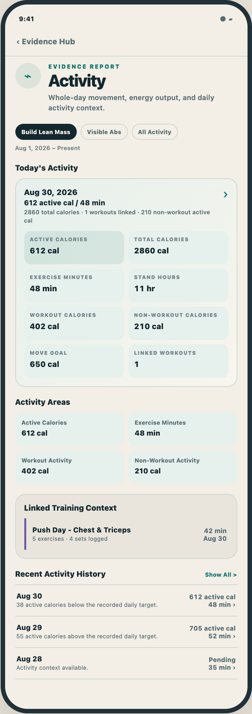

Nutrition root · dark
Functional Reporting followed by canonical Recent History

Nutrition root · mineral light
Exact content and geometry parity

Activity root · dark
Current Areas, linked context, and canonical Recent History
Activity root · mineral light
No Reporting block or dead destinations
